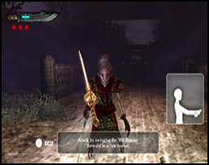

Comment jouer
Ce jeu utilise la manette Wii Remote. L'accessoire Wii MotionPlus est recommandé.
Opérations de menu
Pour sélectionner les onglets d'option
Pointez n'importe quel onglet et appuyez sur le bouton A pour confirmer votre sélection.
Utilisez alternativement la croix directionnelle pour changer la sélection et appuyez sur le bouton A pour confirmer.
Appuyez sur le bouton B pour revenir au menu précédent (si cela est possible).
Opérations de jeu
Vous pouvez choisir de jouer avec ou sans l'accessoire Wii MotionPlus.
Veuillez noter que les commandes varieront selon les différents modes de jeu.
Commandes ( Mode opératoire avec l'accessoire Wii MotionPlus )
Attaquer : Attaquez les ennemis en balançant la manette Wii Remote dans la direction où vous voulez attaquer.
L'épée bougera en fonction de la manière dont vous balancez la manette Wii Remote.
Se défendre : Appuyez et maintenez le bouton B pour bloquer les attaques, tournez la manette Wii Remote pour modifier l'angle de blocage.
Exécuter une technique spéciale : Appuyez et maintenez le bouton A, balancez la manette Wii Remote pour exécuter une technique spéciale.
Il y a 2 types de techniques spéciales selon que la direction de la lacération soit verticale ou horizontale.
Recalibrer
Si la manette Wii Remote / l'accessoire Wii MotionPlus n'est pas précisemment fidèle à vos mouvements, appuyez sur le bouton + pour activer le menu pause.
Sélectionnez l'onglet Recalibrate pour recalibrer l'accessoire Wii MotionPlus.
Commandes ( Mode opératoire sans l'accessoire Wii MotionPlus )
Attaquer : Attaquez l'ennemi en secouant la manette Wii Remote.
Changez l'angle d'attaque en maintenant le bouton B et en tournant la manette Wii Remote.
Relachez le bouton B avant de secouer pour attaquer.
Se défendre : Appuyez et maintenez le bouton B pour bloquer les attaques.
Pendant que vous maintenez le bouton B, tournez la manette Wii Remote pour changer la direction de l'épée.
Exécuter une technique spéciale : Appuyez et maintenez le bouton A, secouez la manette Wii Remote pour exécuter une technique spéciale.
Il y a 2 types de techniques spéciales selon que la direction de la lacération soit verticale ou horizontale.
Tutoriel

Le tutoriel du jeu est joué au début du niveau 1. Le tutoriel est disponible pour tous les modes de commande. (avec ou sans l'accessoire Wii MotionPlus).